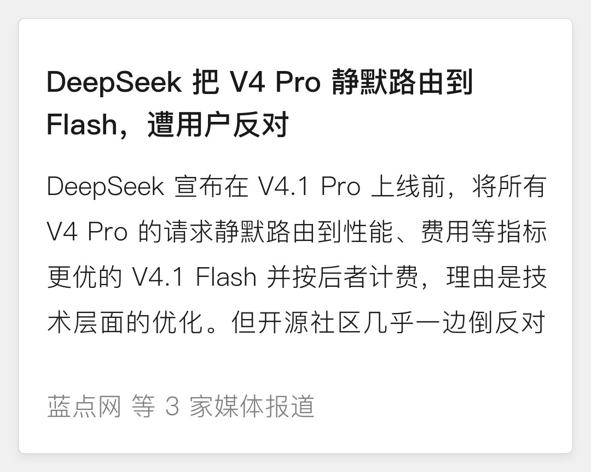

万一哪天算力不够，DeepSeek就有把deepseek-v4.1-pro重定向到deepseek-v4-flash的本事。这项能力有些“挂羊头卖狗肉”的中转站屡见不鲜，不过大家都不会明着来，而DeepSeek却光明正大的开了个坏头
这就跟买猪肉一样，人家跟你说鉴于牛肉在营养、价格、肉质等指标全面超越了猪肉，不把牛肉当猪肉卖我商家良心过不去，实在不太合适。于是我就替买家做了选择，让你以猪肉的价格买到这么好的牛肉，你还得回来感恩我呢
但是别忘了，DS是有企业客户的。对企业客户来说，这就跟GPT模型掺了豆包一样，我就一定要V4 Pro你给我塞了个V4.1 Flash几个意思？这不仅是公关的失败，还是产品经理的失职，也许DeepSeek应该先招一位合格的产品经理了


这就跟买猪肉一样，人家跟你说鉴于牛肉在营养、价格、肉质等指标全面超越了猪肉，不把牛肉当猪肉卖我商家良心过不去，实在不太合适。于是我就替买家做了选择，让你以猪肉的价格买到这么好的牛肉，你还得回来感恩我呢
但是别忘了，DS是有企业客户的。对企业客户来说，这就跟GPT模型掺了豆包一样，我就一定要V4 Pro你给我塞了个V4.1 Flash几个意思？这不仅是公关的失败，还是产品经理的失职，也许DeepSeek应该先招一位合格的产品经理了

这意味着，哪天算力不够，DeepSeek就有把deepseek-v4.1-pro重定向到deepseek-v4-flash的本事。这项能力有些“挂羊头卖狗肉”的中转站屡见不鲜，不过大家都不会明着来，而DeepSeek却正大光明开了个坏头 https://t.co/RBwAdNk5dn https://t.co/DIo6rgJth1
鉴于 DS V4.1 Flash 模型在性能、费用、速度、总用时等各项指标上都全面超越了 V4 Pro。再以更高的价格、更慢的速度和更多的算力消耗给 DS 用户提供原有的性能较差的 V4 Pro 模型会不太合适。V4.1 Flash 正式上线之后，V4.1 Pro 上线之前，V4 Pro 模型的请求都会被路由到 V4.1 Flash，并按 Flash